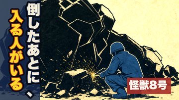
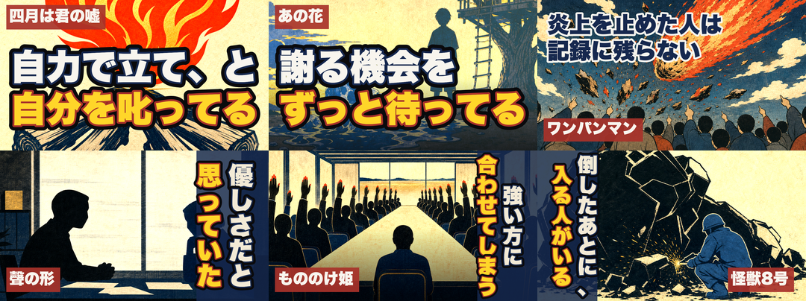

自己判断で通さない規律どおり、毎回まっさらな採点者に独立採点させました。指摘は毎回的確で、2つは私では気づけないものでした。

題字：倒したあとに、／入る人がいる
絵：怪獣の残骸を、防護服の作業者が火花を上げて解体している（＝倒す人ではなく、倒したあとに入る人）
タグ：怪獣8号（赤・右下）
左が実寸360px（フィードでの見え方）。合格した軸＝ポリシー適合10/10（顔なし・固有意匠なし）／補完14/15（タイトルと共有語ゼロ）／明るさ9/10／可読性は180pxでも判読可。
| 稿 | 点 | 採点者の指摘（要点） | 私の対応 |
|---|---|---|---|
| 1稿 | 79 | 題字がタイトルの丸写し。フィードではタイトルとサムネが並ぶので、同じ文を2回読むだけ＝サムネの文字から得る新情報がゼロ | 題字をタイトルが言っていない側（現場）へ。台本の実文「倒すところまでが防衛隊で、そのあとの現場に入るのが彼の会社」から取る |
| 2稿 | 80 | 補完は解決（8→14/15）。今度は題字に主語がなく設定説明／型の反復（左上横2行＝063-065と同型） | 「仕事」→「人」で当事者を立てる。左の縦組みをスクリプトに実装（066/068は右の縦組み、063-065は左上の横2行なので未使用の型）。私の絵は作業者が右にいるので、左に題字を置くと主役と火花が見えたまま |
| 3稿 | 83 | 縦2列が066・067・068で3本連続／極太ゴシック＋生成り白金＋赤タグが6枚すべて同型／題字に当事者（あきらめた側）が出ない／金の列が左端＝縦組みの読み出し側でない／上端の余白が10pxでトリミング時に頭が欠ける危険 | ここで判断をお願いしています |

これは「Tier Aの型を守るほど distinctiveness（25点）が下がる」という、採点表とブランド仕様の正面衝突です。
| 指摘 | 直し方 | 効き |
|---|---|---|
| 題字に当事者が出ない | 右列を「あきらめた人が、」へ（＝「あきらめた人が、／現場に入る」） | 可読性 21→24 圏 |
| 金の列が左端にある | 縦組みは右から読むので、金（強調色）を右列＝読み出し側へ入れ替える | 可読性の残り |
| 上端の余白が10px | 20px以上確保（プレイヤーUIの角丸で頭が欠ける） | 実害の予防 |
| 360pxで黒い塊が「岩・瓦礫」に見える | 輪郭に生物的な分節（牙・関節）か金の割れ線を数本足す＝画像の再生成（AI枠を1枚消費） | 明るさ・単焦点 |
| 型の反復（縦2列3本連続ほか） | 1枚では解けない。シリーズとして型を割る方針が要る | distinctiveness 17→ |
ゲート級の欠陥（明朝・3行・作品名タグ欠落・固有意匠・360pxで潰れる）は一つも無く、実用上の問題はありません。上の「安い直し」3点（当事者・金列・余白）だけ適用してから公開し、型の反復はシリーズ課題として次話へ送る。今日中に予約まで到達できます。
「Tier Aの必須要素（赤タグ・極太ゴシック・生成り）を守ったことを distinctiveness の減点にしない」よう採点表を改訂。ただし採点表を触ったら gold 再calibrate が必須（今日それで台本工程が半日止まりました）。今日は公開を優先し、これは別途やるのが安全です。
別ベース（例：冒頭の三分割＝楽器店・印刷所・体育館の三つの背中）で作り直す。直近6本に無い構図なので distinctiveness は上がりますが、AI画像枠を消費し、あと1〜2周かかります。
次の10本で「題字の色対」「タグの形」「組み方向」のどれをローテーションするかを決めて、採点表の期待と合わせる。今日の公開はAで通し、方針だけ別途決める形でも構いません。
証跡：analytics/creative-loops/thumbnail-2026-07-31-067/（3周の採点JSONと各稿の画像）。本編は final-video 承認済み・全ゲート緑で、残るのはこのサムネとショート1本、そして 8/11 04:00 の予約だけです。